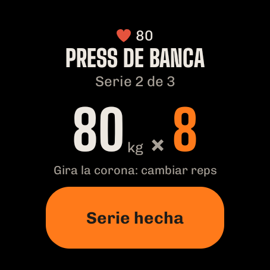
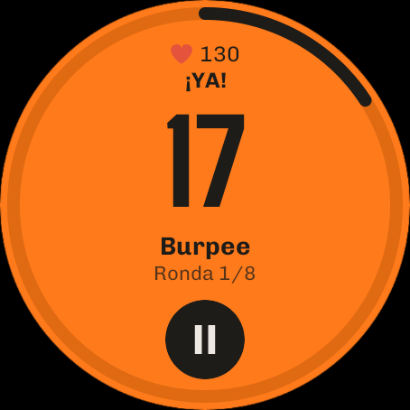

Manual
Todas las funciones de ImberGym explicadas paso a paso. Las funciones marcadas con PREMIUM forman parte de ImberGym Premium; todo lo demás es gratis.
01Primeros pasos
La primera vez que abres ImberGym, unas pocas preguntas lo dejan todo listo. Puedes cambiarlo todo más tarde en tu perfil.
- Idioma: español, inglés o alemán (preseleccionado según tu móvil).
- Unidades: métrico (kg, km) o imperial (lb, mi). La app guarda siempre los valores exactos; la unidad solo afecta a cómo se muestran.
- Sobre ti: nombre, género (incluido «prefiero no decirlo»), edad y, opcionalmente, peso y altura. El peso y la altura se usan para los ejercicios con peso corporal y para tu objetivo de calorías.
- Objetivo y entrenamiento: objetivo (p. ej. ganar músculo, perder grasa), nivel de actividad, dónde entrenas (gimnasio, en casa con mancuernas, sin material) y días de entrenamiento opcionales. Los días de entrenamiento son solo un plan: nunca se marca nada como «perdido».
- Temporizador de descanso: si corre una cuenta atrás después de cada serie.
- ¿Contar calorías?: sin nutrición desaparece la pestaña «Nutrición» y ImberGym es un diario de entrenamiento puro.
- Plan inicial y calendario: la app puede crear un plan para principiantes adecuado y guardar los entrenamientos en tu calendario (véase Calendario).
¿Móvil nuevo? Toca «Restaurar copia de seguridad» en la primera página y elige el archivo ZIP de tu copia (véase Copia de seguridad).
02Cómo está organizada la app
- Resumen: tu día: semana, recomendación, planes, empezar un entrenamiento.
- Planes: tus planes, plantillas y la biblioteca de ejercicios.
- Historial: estadísticas, todos los entrenamientos y récords.
- Nutrición: calorías, macros, alimentos y recetas (se puede desactivar).
- Perfil: ajustes, medidas corporales, suplementos, gimnasios, copia de seguridad y más.
Los mensajes de abajo desaparecen tras unos segundos o al tocarlos, también los que tienen «Deshacer».
03Resumen

Semana
La barra de lunes a domingo muestra los entrenamientos hechos en naranja con una marca, los próximos días planificados con línea discontinua y el día de hoy con un marco.
Recomendado hoy
Si tu plan usado más recientemente tiene varias sesiones, la tarjeta propone la adecuada, según el orden del plan y lo recuperados que estén tus músculos (véase Recomendación). «Empezar entrenamiento» te pone en marcha al instante.
Tus planes
- Todos los planes aparecen plegados, el entrenado más recientemente primero. Tócalo para desplegarlo y ver cada sesión con su última vez (duración, series, volumen o distancia).
- ▶ empieza la siguiente sesión. Si un plan tiene varias, la app pregunta cuál: la siguiente que toca está arriba.
- Al tocar una tarjeta se abre el último entrenamiento de esa sesión con todas las series.
- Con el menú ⋮ puedes «Quitar del resumen» (con deshacer). El plan sigue en la pestaña Planes y vuelve cuando lo entrenas de nuevo.
- Los entrenamientos libres de las últimas cuatro semanas también aparecen aquí (con el nombre de sus ejercicios, p. ej. «Senderismo») y se pueden repetir con ▶.
Inicio rápido
- Otra sesión: empieza cualquier sesión de un plan.
- Entrenamiento libre: sin plan, añade ejercicios sobre la marcha.
- Intervalos: Tabata y más. PREMIUM
- Reto: ¿cuántas repeticiones puedes hacer? La cámara cuenta.
- Aire libre con GPS: graba carreras, rutas en bici y senderismo. PREMIUM
Según tus ajustes, el resumen muestra también «Nutrición de hoy», «Suplementos de hoy», una grabación GPS abierta («continuar») y un icono de tarjeta arriba a la derecha para tus tarjetas de socio.
04Planes y plantillas
Plantillas
La pestaña Planes contiene planes listos: principiante (gimnasio, en casa con y sin mancuernas), cuerpo completo A/B, torso/pierna, empuje/tirón/pierna, rutinas divididas por grupos musculares, abdomen-piernas-glúteos, calistenia, kettlebell, bandas, yoga y más. Empieza una plantilla directamente o cópiala como plan propio. Al copiarla, la app pregunta si debe usarse el temporizador de descanso.
Crear y editar un plan
- Pestaña Planes → crea un plan nuevo y ponle nombre.
- Añade sesiones (p. ej. Empuje, Tirón, Pierna). Las sesiones son un orden, no días fijos de la semana.
- Añade ejercicios a cada sesión y fija series, repeticiones (también un rango como 8–12), descanso entre series y descanso antes del siguiente ejercicio. «Por lado» marca los ejercicios unilaterales.
- Superserie: une dos ejercicios seguidos: durante el entrenamiento se alternan y el descanso llega después de la ronda.
- Añade un bloque de intervalos (Tabata, etc.) debajo de la lista: véase Entrenamiento por intervalos.
Cada cambio se guarda al instante. Una estimación de tiempo arriba muestra cuánto dura más o menos la sesión. En el editor también activas o desactivas el temporizador de descanso de este plan y si se muestra en el resumen.
Compartir un plan como código QR
En el editor del plan toca el icono QR: todo el plan va dentro del código, sin servidor. «Compartir como imagen» lo envía p. ej. por mensajería. Compartir es gratis.
Escanear un plan PREMIUM: pestaña Planes → «Escanear plan», captura el código con la cámara o cárgalo desde una imagen, revisa la vista previa e «Importar».
Gratis: hasta 5 planes propios (las plantillas copiadas cuentan); ilimitados con Premium.
05Ejercicios

Biblioteca de ejercicios
Más de 250 ejercicios, de máquinas a yoga. Busca por nombre o músculo y filtra por músculo y material.
Detalle del ejercicio
- Animación del movimiento con los músculos implicados en naranja (principales intensos, secundarios más claros), la fase («Empujar», «Bajar despacio») y un contador de repeticiones.
- Músculos y material, «Ejecución» con ritmo y consejos de técnica.
- Tu progreso: un gráfico de tus valores a lo largo de los entrenamientos.
- En calistenia, los niveles de progresión (más fácil/más difícil).
La figura existe en versión masculina y femenina: elígela en tu perfil, en «Figura».
Crear un ejercicio propio
- Biblioteca → crea tu propio ejercicio.
- Elige nombre, material y registro: peso × reps, peso corporal × reps, reps con fuerza de la banda, tiempo, cardio o grabación GPS (para tus propios deportes al aire libre; entonces también «Mostrar ritmo» y «Pausa automática»).
- Toca los músculos en el mapa corporal: 1× = principal, 2× = secundario, 3× = quitar.
Los ejercicios propios con historial se archivan al borrarlos: tu historial se conserva. Gratis hasta 5 ejercicios propios, ilimitados con Premium.
06Entrenamiento

Empezar
Desde el resumen (▶, «Recomendado hoy», «Otra sesión», «Entrenamiento libre») o desde la pestaña Planes. Un entrenamiento en curso sobrevive incluso a un reinicio del móvil: al abrir la app vuelves directamente a él.
La pantalla de entrenamiento
- Un ejercicio por página: desliza para cambiar de ejercicio; la última página es el resumen. Arriba: ejercicio x de y, duración del entrenamiento y (con banda pectoral) tu pulso.
- Lista de series: hechas, «ahora» (naranja) y pendientes. Toca una serie para seleccionarla.
- Valores: cambia peso y repeticiones con −/+ o toca el número grande para escribirlo (valen la coma y el punto). Los valores de la última vez ya están rellenados.
- «Serie n hecha» marca la serie, inicia el descanso y pasa automáticamente al siguiente ejercicio (en una superserie, al ejercicio compañero).
- Añadir serie para una serie extra. Las series que no hiciste se quedan vacías y se descartan al terminar.
Ayudas en la tarjeta de la serie
- Toca la miniatura del ejercicio: animación y ejecución sin salir del entrenamiento.
- Ajuste de la máquina (máquinas, poleas, barra): guarda p. ej. la altura del asiento y la próxima vez estará ahí.
- Incremento de peso (p. ej. mancuernas): el salto de −/+ por material (por defecto 2,5 kg / 5 lb).
- ¿Ocupada? Cambiar o Cambiar ejercicio: elige una alternativa adecuada (solo antes de hacer una serie del ejercicio).
- Sugerencia de progresión: si haces todas las repeticiones, la app propone más peso (o menos asistencia, una banda más fuerte, el siguiente nivel). Solo se aplica con «Aplicar».
- ¡Nuevo récord! aparece justo después de marcar una serie cuando superas una marca anterior.
Menú ⋮
Añadir ejercicio, elegir gimnasio PREMIUM, mostrar tarjeta PREMIUM, temporizador de descanso sí/no, quitar ejercicio, descartar entrenamiento.
Cardio y ejercicios de aguante
Los ejercicios de cardio no tienen series: tiempo y distancia (pisos en la escaladora), nivel en las máquinas y luego «Hecho». Los ejercicios de aguante (p. ej. plancha) registran segundos.
Peso corporal y asistencia
En los ejercicios con peso corporal introduces el peso añadido; en los asistidos (p. ej. dominadas asistidas), la asistencia: la app calcula con tu peso corporal del perfil. Si falta, lo pregunta una vez en la primera serie.
Terminar
«Terminar» en la página de resumen, o ✕ / el botón atrás: la app pregunta «Terminar / Descartar / Seguir entrenando». Sin ninguna serie hecha no se guarda nada.
07Descanso y pantalla de bloqueo
- Después de cada serie corre abajo la cuenta atrás del descanso con «A continuación», −15 s, +15 s y «Saltar». Su duración viene del plan (descanso entre series o antes del siguiente ejercicio).
- El temporizador sigue corriendo si bloqueas el móvil o cambias de app; una notificación muestra la cuenta atrás y al final suena la señal de descanso.
- Elige la señal de descanso en tu perfil: pitidos, gong, campana, silbato, campana de boxeo, suave, sonido del sistema o ninguno, con escucha previa. La vibración tiene su propio interruptor.
- Desactivar el temporizador: por plan en el editor, para entrenamientos libres en el perfil y durante un entrenamiento con ⋮.
- Descanso según el pulso: con banda pectoral, el descanso termina en cuanto tu pulso baja a tu umbral (como pronto a los 30 s, como muy tarde con el temporizador).
Pantalla de bloqueo
Durante un entrenamiento ImberGym aparece sobre la pantalla de bloqueo: logo y un reloj grande (descanso o tiempo de entrenamiento). A los 2 minutos se oscurece y un toque la ilumina; «Toca para desbloquear» te devuelve al entrenamiento. La pantalla se queda encendida durante el entrenamiento.
08Entrenamiento por intervalos PREMIUM

Inicio rápido
- Resumen → mosaico «Intervalos».
- Elige una plantilla: Tabata 20/10 × 8, HIIT 40/20 × 8, 30/30 × 10 o EMOM 60 s × 10; todo se puede ajustar: esfuerzo, descanso, rondas, bloques y descanso entre bloques.
- Añade ejercicios: se alternan en cada ronda.
- «Empezar intervalos».
Cómo funciona
Tras 10 s de preparación, una cuenta atrás grande muestra el esfuerzo (naranja) y el descanso (gris, con «A continuación» y la figura). Antes del esfuerzo una voz cuenta en inglés «One, two, three – go!» y antes de terminar «Three, two, one – stop!» (se puede desactivar en la señal de descanso del perfil; entonces suenan pitidos). Funciona también con el móvil bloqueado. Pausa y termina cuando quieras; los intervalos hechos se guardan. Al final puedes introducir tus repeticiones por ronda.
En un plan
Añade un «Bloque de intervalos (Tabata y más)» en el editor del plan: el bloque se convierte en una página propia del entrenamiento.
Contar con la cámara EXPERIMENTAL
En los ejercicios sin material (sentadilla, sentadilla con salto, sentadilla split, zancada hacia atrás, burpee, variantes de flexiones) y en los abdominales crunch, abdominales completos, crunch inverso, abdominales en V, elevación de piernas y elevación de rodillas tumbado, la cámara puede contar tus repeticiones. En plancha alta, plancha y plancha lateral mide cuánto tiempo mantienes la posición correcta: el reloj del intervalo sigue corriendo, el tiempo aguantado solo mientras hombros, cadera y tobillos forman una línea; si no, verás «¡Cadera arriba!» o «¡Cadera abajo!».
- En la página del bloque toca «Contar con la cámara (experimental)» y permite la cámara.
- Coloca el móvil de lado a 2–3 m, p. ej. apoyado en una pared o una botella. Flexiones, abdominales o ejercicios de pie y de suelo mezclados: pon el móvil en el suelo, en vertical o en horizontal, la app lo compensa. Con el móvil en horizontal también giran la preparación, el contador y el resumen: segundos y repeticiones grandes a la izquierda, la animación a la derecha.
- «Empezar cuando esté listo» y ponte en posición. En cuanto estés quieto 2 segundos en la imagen, el bloque empieza solo (como muy tarde a los 20 segundos).
Durante el esfuerzo se muestran segundos y repeticiones uno al lado del otro y debajo «perfectas» (recorrido completo) y «normales» (no del todo completas). Las repeticiones demasiado cortas no cuentan. Al final, el resumen muestra las repeticiones por ejercicio y ronda, tu porcentaje de técnica y un consejo; los números ya están rellenados y se pueden cambiar.
La imagen de la cámara solo se analiza en tu móvil y nunca se guarda. La detección se queda contigo aunque alguien entrene detrás de ti en el gimnasio. La función aún está en pruebas: revisa los números al final.
Reto
Resumen → mosaico «Reto» (gratis): «¿Cuántas flexiones puedo hacer?»: la cámara cuenta. Tres tipos: Máx. repeticiones (termina solo cuando pasan 6 segundos sin repetición), Contrarreloj (tantas como puedas en el tiempo que elijas en minutos, p. ej. 0,5, 1 o 30) y Aguantar (plancha, etc.; termina cuando pierdes la posición durante 2 segundos). Elige un ejercicio, colócate como arriba y tras «3 – 2 – 1 – ¡Ya!» empieza. Al final ves tu resultado con «perfectas», tu mejor marca anterior y, si toca, «¡Nuevo récord!». El reto se guarda automáticamente (aparece en tu historial y cuenta para tus récords; bórralo allí si quieres). Compartir envía tu resultado como tarjeta con ejercicio, marca y, si lo has conseguido, «¡Nuevo récord!».
09Recomendación y coach de estancamiento
Recomendado hoy
En planes con varias sesiones: si la siguiente sesión del plan está bien recuperada (al menos un 85 %), se recomienda esa; si no, la mejor recuperada. La tarjeta muestra la recuperación de los grupos musculares principales y un aviso como «Piernas solo 27 % recuperado». ⓘ explica la regla. Se puede desactivar en el perfil.
Coach de estancamiento PREMIUM
Si un ejercicio no ha mejorado en 4 entrenamientos (o 3 entrenamientos en 3 semanas), aparece antes de la primera serie un aviso amarillo con una sugerencia, p. ej. «hoy más ligero (70 kg × 8) y luego vuelve a apretar».
- Aplicar introduce el peso más ligero (−10 %) en las series pendientes.
- Más muestra la evolución y opciones: descarga, otro rango de repeticiones, una variante, más descanso.
- Ocultar 2 semanas si quieres seguir así a propósito.
El cardio y los ejercicios de aguante nunca reciben aviso de estancamiento. Se puede desactivar en el perfil.
10Reloj (Wear OS) PREMIUM

Con un reloj Wear OS (p. ej. Samsung Galaxy Watch 4 y posteriores, Google Pixel Watch, OnePlus Watch, TicWatch) controlas tu entrenamiento desde la muñeca: el móvil se puede quedar en el bolsillo. Todos los datos se quedan en el móvil; el reloj solo los muestra y envía lo que introduces.
Instalar
- ImberGym tiene que estar instalado en tu móvil.
- Lo más fácil: Perfil → «Conectar reloj» → «Instalar en el reloj»: la Play Store se abre directamente en tu reloj. La página muestra también si ImberGym ya está instalado allí. También puedes buscar ImberGym en la Play Store del reloj.
- La primera vez que lo abras en el reloj, permite las notificaciones y el pulso.
Empezar un entrenamiento
El reloj muestra todos los planes con sus sesiones, la siguiente en naranja. Toca para empezar el entrenamiento en el móvil y en el reloj. Si ya hay un entrenamiento en curso, el reloj muestra al instante la serie actual.
Serie
- Ejercicio, «Serie 2 de 3» y tus valores de la última vez.
- Toca un valor → cámbialo con −/+ (el peso con tu incremento de peso). Toca el número → escribe cualquier valor, p. ej. 82,5.
- Con corona o bisel giratorio, al girar cambian directamente las repeticiones.
- «Serie hecha» marca la serie, también en tu móvil.

Descanso
Cuenta atrás con un anillo; +15 añade tiempo, ▶ lo salta. El reloj cuenta por su cuenta y vibra al terminar el descanso, aunque la app no esté abierta o la pantalla esté apagada. Mientras tanto, en la esfera aparece un icono de ImberGym con el tiempo restante.
Entrenamiento por intervalos
En la página de un bloque de intervalos el reloj muestra el tipo, los tiempos y los ejercicios con «Empezar intervalos». Después: esfuerzo en naranja, descanso oscuro con «A continuación»; vibración en cada cambio. ⏸ pausa; luego ▶ reanuda o ✕ termina. Las repeticiones por ronda las introduces después en el móvil.
Pulso
Durante el entrenamiento el reloj mide tu pulso y lo envía al móvil, igual que una banda pectoral (indicador ❤, zonas de pulso, detalles del entrenamiento). Si hay una banda pectoral conectada, tiene prioridad.
Mosaico
Añade el mosaico «ImberGym» a los mosaicos de tu reloj: muestra la siguiente sesión con «Empezar» o, durante un entrenamiento, el ejercicio actual.
Relojes antiguos: los relojes Tizen (p. ej. Gear S3) no son compatibles. Garmin, Amazfit y otros a menudo pueden transmitir el pulso como una banda pectoral (véase Pulso).
11Aire libre y Trackshow PREMIUM

Grabar
- Resumen → «Aire libre con GPS» → elige la actividad (correr, bici, senderismo…).
- Permite la ubicación «mientras se usa la app». Empieza a grabar: la pantalla puede estar apagada; una notificación muestra «ImberGym está grabando».
- Pausa y reanuda cuando quieras. Al correr y en bici la app se pausa automáticamente tras 10 s parado y sigue con tu primer paso (no en senderismo: la parada forma parte de la ruta). Tras una pausa manual también se reanuda sola en cuanto sigues.
- «Terminar» guarda la ruta como entrenamiento con distancia, tiempo, velocidad o ritmo y desnivel (del barómetro).
Trackshow
Al terminar, la Trackshow reproduce tu ruta sobre curvas de nivel, con vuelo de cámara y momentos destacados (tramo más empinado, punto más alto, kilómetro más rápido, récord), tarjeta de resultado y perfil de altitud. «Reproducir otra vez» la repite; toca el nombre del lugar para cambiarlo.
Compartir como imagen de historia (9:16) o como vídeo con vuelo de cámara. En los detalles del entrenamiento también hay una exportación GPX para otras apps.
12Historial y estadísticas

Estadísticas
- Periodo semana / mes / 3 meses (hasta hoy) comparado con el periodo anterior: entrenamientos, tiempo de entreno, volumen.
- Lo que has entrenado PREMIUM: mapa corporal de frente y de espaldas; cuantas más series, más intenso el color; toca para ver el número. Cambia a Recuperación: lo recuperado que está cada músculo (estimación).
- Distribución por grupos musculares como anillo.
- Récords: los más recientes; «Ver todos» abre la lista. Toca un récord para ver la evolución del ejercicio.
- Mostrar peso y grasa corporal y el resumen semanal y anual como tarjeta para compartir.
Entrenamientos

Todos los entrenamientos por año y mes con totales. Filtra por plan (incluidos los «Entrenamientos libres») y por ejercicio, combinables.
Detalles del entrenamiento
- Todos los ejercicios y series, trofeos por récords, gimnasio o lugar.
- Editar: toca una serie para cambiarla, añade o borra series, ajusta fecha, hora de inicio y duración, borra el entrenamiento.
- Pulso (media, máximo, curva): de la banda pectoral o con «Cargar pulso del reloj».
- Compartir entrenamiento como tarjeta con músculos, ejercicios y nuevos récords; en rutas GPS, la Trackshow y el GPX.
Récords
Por ejercicio: peso máximo, 1RM estimado, volumen, más repeticiones, aguante más largo; en cardio, distancia más larga, ritmo o velocidad más rápidos, duración más larga. Un récord solo cuenta si supera una marca anterior.
13Nutrición

El día
Con ‹ › cambias de día. El anillo muestra lo comido frente al objetivo y lo que «queda»; debajo, proteína, carbohidratos y grasa. Cuatro comidas: desayuno, comida, cena y tentempiés.
Registrar alimentos

- + en una comida abre los mosaicos: primero lo que comes a menudo en esa comida y, si no, sugerencias típicas.
- Tocar registra una ración al instante (la cantidad aparece bajo el nombre), con «Deshacer». El pequeño − del mosaico quita una ración.
- Mantener pulsado abre la cantidad en gramos, mililitros o raciones (también ½) con la tabla nutricional.
- Buscar: más de 1.200 alimentos y platos cotidianos, sin conexión.
- Código de barras: escanea un producto: primero se busca en el móvil y, si no, en Open Food Facts. Revisa los valores y guarda: la próxima vez estará ahí al instante.
- Crea un alimento propio (valores por 100 g o 100 ml, interruptor «Líquido») o usa Añadir rápido (solo calorías).
- De recetas: una receta directamente en esta comida.
- Toca una entrada para cambiar la cantidad o quitarla.
Objetivos
«Ajustar objetivos» (o toca el anillo): elige tu objetivo, objetivo de calorías automático (según altura, peso, edad y actividad) o propio, macros individuales y un objetivo para días de descanso. Objetivo de calorías dinámico PREMIUM: suma una parte de tu actividad medida desde Health Connect (deslizador 0–100 %).
¿No te interesan las calorías? Perfil → desactiva la nutrición; la pestaña desaparece.
14Recetas
Nutrición → «Descubrir recetas» o la biblioteca: 40 recetas propias con filtros (comida, alto en proteína, vegetariana). Una receta muestra calorías y macros por ración, ingredientes con calculadora de raciones (−/+, ½, ¼, ¾), pasos y un consejo. «Añadir 1 ración al diario» la registra. 6 recetas básicas son gratis; todas las demás y tus propias recetas (ingredientes desde la búsqueda de alimentos, foto propia) son Premium PREMIUM.
15Peso, grasa corporal y fotos de progreso
Peso y grasa corporal
- Perfil → «Peso y grasa corporal» → añade una entrada. Grasa corporal como valor o estimada por medidas (cuello, cintura y, si hace falta, cadera; necesita la altura en el perfil).
- La tarjeta «Actual» muestra la media de 7 días y la variación. Gráficos PREMIUM de 1 mes, 3 meses, 1 año o todo.
- Las entradas se agrupan por meses; toca para editarlas o borrarlas.
- Importar desde Health Connect (p. ej. una báscula Withings): activa el interruptor y da permiso; las mediciones nuevas llegan solas; desliza hacia abajo para actualizar al momento.
- El peso de tu perfil sigue siempre a la entrada más reciente.
Fotos de progreso PREMIUM
Perfil → «Fotos de progreso»: elige la vista (de frente, de lado, de espaldas); «Cámara» muestra tu última foto semitransparente como superposición (misma pose y distancia), con temporizador. Compara antes/después con un deslizador o un fundido. Las fotos se quedan en la app, ni en la galería ni en la copia de seguridad de Android; «Compartir / guardar», «Exportar todas las fotos» y «Compartir comparación» las sacan solo cuando tú quieres.
16Pulso y Health Connect
Pulso de tu reloj
Si tu reloj escribe en Health Connect (p. ej. Samsung, Google, Garmin vía Health Connect): en los detalles del entrenamiento toca «Cargar pulso del reloj»; da permiso una vez y después ImberGym obtiene automáticamente el pulso de los entrenamientos recientes. Consejo: inicia también un entrenamiento en el reloj; si no, solo mide cada pocos minutos.
Relojes Huawei: Huawei Health no escribe en Health Connect. La app «Health Sync» transfiere el pulso; después funciona como arriba.
Banda pectoral y zonas de pulso

- Perfil → «Banda pectoral y zonas» → ponte la banda, «Buscar banda», vincúlala (permite «Dispositivos cercanos»).
- Durante un entrenamiento se conecta sola; tu pulso aparece arriba con el color de su zona.
- Fija tu pulso máximo (si no, 220 − edad); de ahí salen cinco zonas.
- Opcionalmente, descanso según el pulso con tu propio umbral (véase Descanso).
Muchos relojes pueden transmitir el pulso como una banda (p. ej. Garmin «Transmitir frecuencia cardiaca», relojes Huawei recientes «Compartir frecuencia cardiaca», Polar, Coros, Suunto): vincúlalos igual que una banda.
17Suplementos
Perfil → «Suplementos»: añade tus propios productos (nombre, forma, unidad como mg, UI, unidad, gotas…, cantidad habitual y, opcionalmente, principio activo por unidad). Toca «Tomado» cada día (mantener pulsado = otra cantidad, ↶ = deshacer, también para días pasados). Los recordatorios tienen hora y días de la semana (diario, de lunes a viernes o a tu gusto). El calendario mensual muestra qué días lo tomaste todo. ImberGym no sugiere a propósito ningún producto ni dosis.
18Gimnasios y tarjetas de socio PREMIUM
Mis gimnasios
Perfil → «Mis gimnasios»: crea un gimnasio con un nombre y «Usar la ubicación actual». Cuando empiezas un entrenamiento allí, la app reconoce el gimnasio («Lugar detectado»); si no, elígelo durante el entrenamiento con ⋮ → «Elegir lugar». El lugar aparece en el historial, en los detalles y en la entrada del calendario.
Tarjetas de socio
Perfil → «Tarjetas de socio»: escanea el código de barras o QR de la tarjeta con la cámara o introduce número y formato, elige un nombre y un color y asocia un gimnasio. Tócala para mostrarla a pantalla completa con el brillo al máximo, para el lector de la entrada. Acceso rápido con el icono de tarjeta del resumen y durante el entrenamiento con ⋮ → «Mostrar tarjeta». Las tarjetas se quedan solo en tu móvil (nunca en una copia de seguridad). Por desgracia, un móvil no puede imitar los chips con transpondedor (RFID/NFC).
19Calendario
Perfil → «Guardar los entrenamientos en el calendario»: da permiso y elige un calendario; también se pueden añadir los entrenamientos anteriores. Cada entrenamiento terminado se convierte en un evento (título «ImberGym: nombre del plan», inicio y fin, ejercicios y series en la descripción, gimnasio como lugar) y se actualiza al editarlo o se quita al borrarlo. Al desactivarlo, la app pregunta si borrar las entradas existentes. No se crean eventos por adelantado.
20Perfil y ajustes
- Datos personales: nombre, género, edad, altura, peso, objetivo, actividad.
- Idioma y unidades: los cambios se aplican al instante.
- Figura: figura masculina o femenina en las animaciones y el mapa corporal.
- Señal de descanso: sonido con escucha previa, vibración, «Avisos de voz en los intervalos».
- Temporizador de descanso predeterminado para entrenamientos libres y planes nuevos.
- Recomendación diaria y coach de estancamiento sí/no.
- Nutrición sí/no.
- Peso y grasa corporal, fotos de progreso, suplementos, banda pectoral y zonas, mis gimnasios, tarjetas de socio, calendario, datos y copia de seguridad.
- ImberGym Premium, Valorar ImberGym y Acerca de ImberGym (versión, privacidad, contacto, fuentes, licencias).
21Copia de seguridad, importación y exportación
Copia de seguridad
Perfil → «Datos y copia de seguridad» → crear copia de seguridad: un archivo ZIP con todos los datos (fotos de progreso solo si las incluyes); guárdalo con el menú de compartir, p. ej. en Google Drive o en Archivos. Guárdalo en un lugar seguro; ImberGym no tiene nube.
Restaurar
«Elegir archivo de copia» → revisa la fecha y el número de entrenamientos → «Sustituir». La app se reinicia con los datos de la copia. También se puede hacer en la primera página después de instalarla.
Importar desde otras apps
«Elegir archivo CSV»: se reconocen las exportaciones de Strong y Hevy (en Strong, elige la unidad de peso). La vista previa muestra entrenamientos, series y nuevos ejercicios propios; los entrenamientos duplicados se omiten.
Exportar
«Exportar entrenamientos (CSV)»: una fila por serie; se abre p. ej. en Excel.
23Ayuda
- ¿No suena la señal de descanso? Permite las notificaciones de ImberGym y revisa el modo «No molestar».
- ¿Falta el pulso en entrenamientos cortos? Sin un entrenamiento en el reloj solo mide cada pocos minutos: entrena también en el reloj o usa una banda pectoral.
- ¿No se detecta el gimnasio? Permite la ubicación y guarda una vez la ubicación del gimnasio estando allí.
Preguntas, deseos, errores: chr.mathai@gmail.com